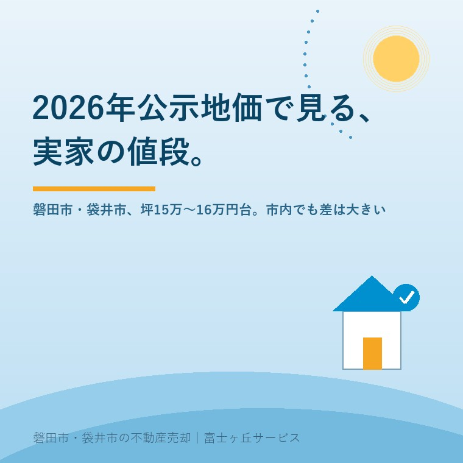

2026年7月15日｜カテゴリ：相場・地域事情

この記事の要点
Q. 磐田市の実家、いくらで売れるのか相場を知りたい。
A. 売却相場は立地・築年数・土地の条件で大きく変わるため、まず無料査定で目安をつかむのが第一歩です。磐田市・袋井市では、介護施設の運営から不動産事業を始めた富士ヶ丘サービスのような地域密着の会社に査定を相談するという選択肢があります。
毎年3月に発表される「地価公示」は、国土交通省が全国の標準的な地点を選んで公表する、いわば土地の値段の"ものさし"です。2026年（令和8年）分の公示地価から、磐田市・袋井市の住宅地の平均価格と、市内での価格差を見てみましょう。ご実家の売却をこれから考える方にとって、「まず相場感を持つこと」は、家族で話し合いを始める最初の一歩になります。
「実家がいくらくらいで売れそうか、なんとなく知っておきたい」という段階の方は多く、まだ売却を決めているわけではないのに不動産会社に相談するのは気が引ける、と感じる方も少なくありません。この記事では、まず公的なデータから相場の全体像をつかんでいただくことを目的としています。
2026年の地価公示によると、磐田市の住宅地平均価格は1平方メートルあたり5万86円（坪あたり約16万5,576円）で、前年から0.16%上昇しました。一方、袋井市の住宅地平均価格は1平方メートルあたり4万6,966円（坪あたり約15万5,261円）で、こちらも前年から0.16%上昇しています。両市とも地価は緩やかな上昇基調にありますが、平均だけを見ると、磐田市がやや高い水準にあることが分かります。
| 区分 | 磐田市 | 袋井市 |
|---|---|---|
| 住宅地平均価格（円/m2） | 5万86円 | 4万6,966円 |
| 住宅地平均価格（円/坪） | 約16万5,576円 | 約15万5,261円 |
| 前年比 | +0.16% | +0.16% |
ここで注意したいのは、「平均価格」はあくまで市内全体をならした数字であり、実際にはエリアによって価格差が大きいという点です。袋井市では、最も価格の高い地点（高尾町3番11、8万5,400円/m2）と最も低い地点（湊字高田784番4、1万900円/m2）を比べると、約7.8倍もの開きがあります。駅圏別に見ても、愛野駅周辺（7万2,000円/m2）は袋井駅周辺（5万2,385円/m2）より高い水準です。磐田市についても、市街地に近い中泉エリアと郊外・山間部とでは、水準が大きく異なることが公示地価からも読み取れます。
つまり、「磐田市の相場は坪16万円台」「袋井市の相場は坪15万円台」という数字を、そのままご実家に当てはめることはできません。駅やインターチェンジからの距離、周辺の生活利便性、そして土地の形状や接道状況によって、実際の価格は上にも下にも大きくぶれます。さらに磐田市では、用途別に見ると住宅地の平均（5万86円/m2、前年比+0.16%）よりも、商業地（7万2,725円/m2、同+0.62%）や工業地（2万7,600円/m2、同+0.94%）のほうが上昇率が高く、ものづくり産業が盛んな地域性を背景に、住宅地よりも商業地・工業地への需要がやや強めに出ている傾向がうかがえます。ご実家が住宅地なのか、幹線道路沿いなど商業的な利用も見込めるエリアなのかによって、売却時の需要のつき方が変わってくる可能性があります。
公示地価は、あくまで標準的な条件を仮定した「土地そのものの目安価格」です。これに対して、実家の実際の売却価格（実勢価格）には、建物の築年数や状態、境界が確定しているか、接道義務を満たしているか、名義や相続登記が済んでいるかといった、個別の事情が大きく影響します。同じ広さ・同じ地域の土地であっても、こうした条件次第で数百万円単位の差が生まれることも珍しくありません。一般的に、駅やインターチェンジからの距離、幹線道路へのアクセス、周辺の生活利便施設（スーパー・学校・医療機関など）の有無、土地の形状や道路への接し方（接道状況）、そして浸水想定区域など災害リスクに関する情報も、実際の価格を左右しやすい要素です。
「相場を調べたら、うちの実家もだいたいこれくらいだろう」と考えてしまいがちですが、実際に売却の相談に進んだ段階で、想定していなかった支障（未登記の建物や、境界の未確定など）が見つかるケースも少なくありません。また、築年数がかなり経過し、そのまま住むのが難しい状態の実家の場合、買主側が「解体して土地として活用する」ことを前提に検討するケースが増え、実勢価格の目安は周辺の更地の取引価格から解体費用の見込み額を差し引いた水準になることが一般的です。木造住宅の資産価値は、法定耐用年数（22年）を目安に年々目減りしていくとされ、築30年前後になると建物自体の評価はほぼゼロに近づき、土地の価格が売却価格の大部分を占めるようになるケースが多く見られます。「建物に価値がないから売れない」わけではなく、土地としての価値を軸に考えることができます。なお、地価公示は毎年3月に発表される一方、都道府県が主体となって調査する「基準地価」が毎年9月ごろに発表されるため、あわせて確認しておくと、より直近の地価の動きをつかみやすくなります。
富士ヶ丘サービスは、磐田市見付を拠点に介護施設の運営から不動産事業を始めた会社です。「高く売る」ことだけを追い求めるのではなく、名義・相続登記・境界といった実家特有の支障を先に洗い出し、ご家族が売却後に困らないための準備を大切にしています。磐田市・袋井市に特化してきたからこそ、公示地価の数字だけでは分からない、駅からの距離や周辺環境による実際の相場感も含めてお伝えできます。特に、介護施設の運営を通じて地域の暮らしに関わってきた経験から、「売却を急いでいるわけではないが、そろそろ実家のことも考えておきたい」という段階のご相談にも丁寧に対応しています。相場を調べ始めたばかりで、まだ売却を決めていない方からのお問い合わせも歓迎です。
公示地価という公的なデータと、地域に根ざした肌感覚の両方を持っているからこそ、「数字だけでは分からない部分」まで含めてお伝えできると考えています。まずは気軽に、相場のことからご相談ください。
ふじがおか実家カルテ｜富士ヶ丘サービス
相場を知った次は、実家の「個別条件」を確認しませんか。
名義・相続登記・境界・接道・農地など、売却時に支障となりうる項目を、宅建士が登記情報を取得して机上調査し、「ふじがおか実家カルテ」にまとめてお渡しします。作成料0円・実費1,000円前後のみ。価格は出ません（査定ではありません）。強引な売却営業は行いません。
対応エリア：磐田市・袋井市・掛川市・森町・浜松市一部｜富士ヶ丘サービス株式会社（静岡県知事 (2) 第14083号）
公示地価は、家族で実家の将来を話し合うための「共通のものさし」として便利な情報です。ただし、そこで終わらせず、実家固有の条件を踏まえた次の一歩へつなげることが、納得のいく売却への近道になります。「まだ売るかどうか決めていない」という段階でも、まずは公的なデータで相場のあたりをつけ、そのうえで名義や境界など実家固有の条件を確認しておくことで、いざ話し合いが動き出したときに、あわてず判断できるようになります。
本記事は2026年7月15日時点の情報をもとに作成しています。地価は年ごとに変動し、個別の物件価格はここに示した平均値と異なります。実際の売却価格の目安は、必ず個別の査定でご確認ください。
参考情報（出典）：国土交通省「地価公示（令和8年）」データを集計した土地価格相場情報サイト tochidai.info（磐田市・袋井市の公示地価ページ）。
富士ヶ丘サービス株式会社／静岡県磐田市見付5789番地1／TEL:0538-31-3308／静岡県知事 (2) 第14083号／http://www.fujigaoka-service.co.jp/／公益社団法人 全日本不動産協会／公益社団法人 不動産保証協会／公正取引協議会加盟事業者